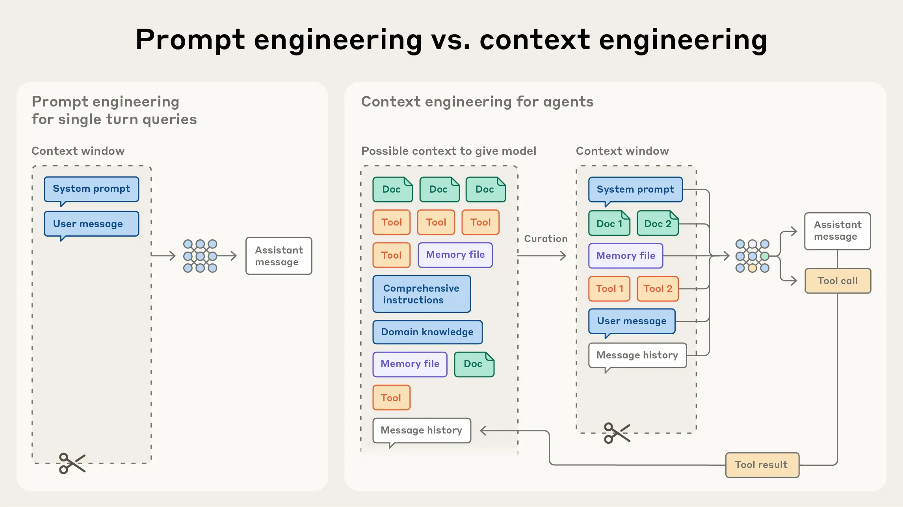
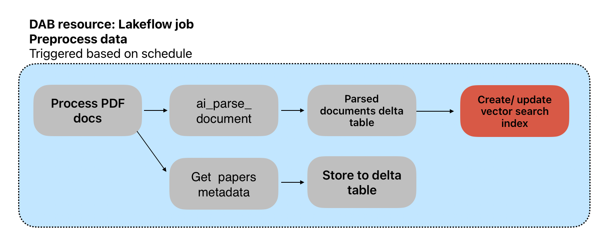
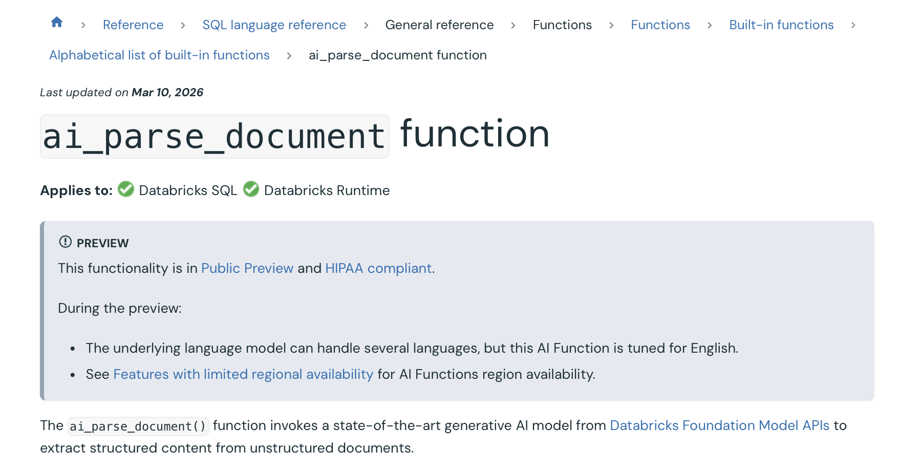
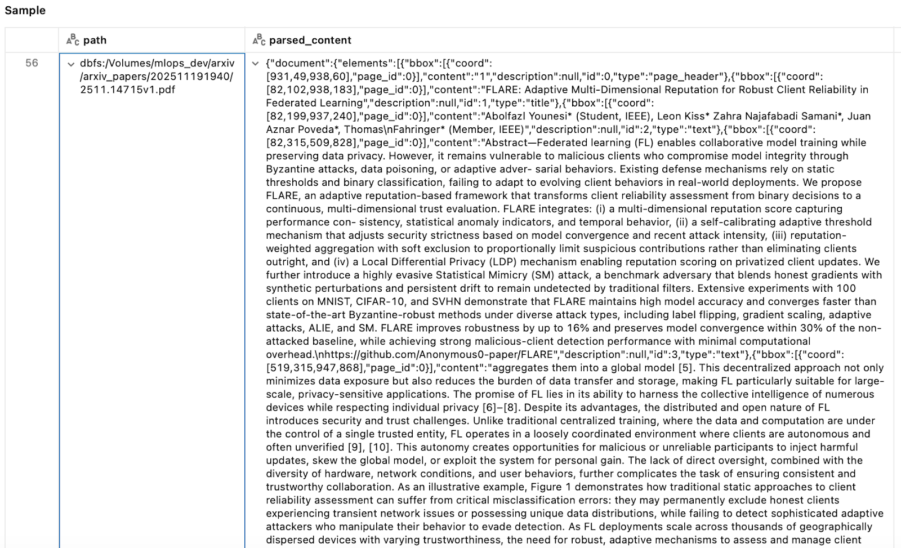
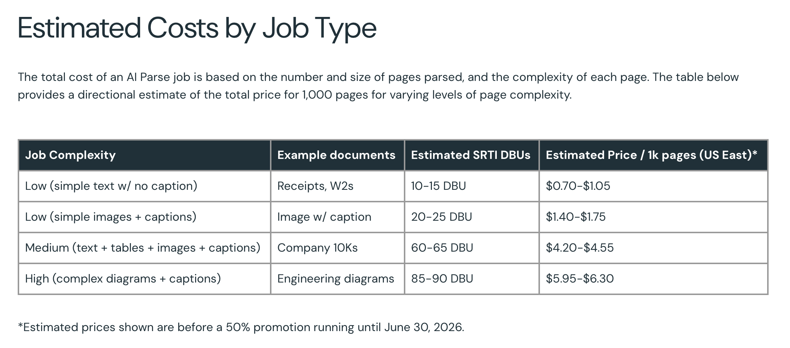
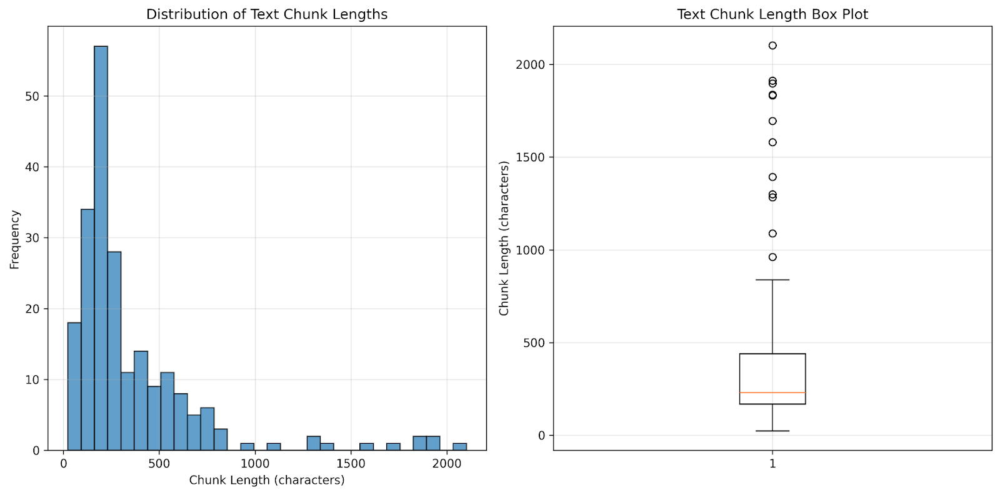

Context engineering
What goes into an agent’s context window.
LECTURE 2
21 October 2026
16:00–18:00 CET

Welcome to Lecture 2. We move from models to the information we deliberately supply to an application at inference time.
LECTURE 2
What goes into an agent’s context window.
The arXiv curator retrieval flow.
PDF parsing with ai_parse_document.
Prepare information for retrieval.
Semantic search, metadata filtering, hybrid ranking, and grounded answers.
Set expectations: the practical work is split across notebooks 2.1 to 2.4.
CONTEXT ENGINEERING
Relevant arXiv paper chunks selected for the current question.
Lecture 2 focus
Capabilities an agent can invoke when information or action is needed.
Lecture 3
Information retained across turns or workflows without overfilling the prompt.
Lecture 3
Context is broader than RAG. Today we focus on retrieved knowledge; later lectures add tools and memory.
CONTEXT ENGINEERING

Prompts still matter, but production systems must select documents, tool outputs, and history for every turn.
CONTEXT ENGINEERING
Explain that excess context can increase cost and distract the model. The work is curation.
REFERENCE ARCHITECTURE
ai_parse_documentThis reflects the current course code: chunks live in Delta; retrieval vectors and search state live in Lakebase pgvector.
REFERENCE ARCHITECTURE

Updated for this course: the final target is the Lakebase pgvector table rather than the legacy Vector Search index shown in the original source diagram.
Only newly discovered papers should be processed. The embedding loader upserts by chunk ID so repeat runs are safe.
DATA INGESTION
Multi-column pages, tables, figures, equations, headers, and captions make simple text extraction unreliable.
We need structured elements and their content before we can form useful chunks.
Paper ID, title, authors, and dates make retrieval filterable and answers traceable.
Bad extraction creates bad chunks; retrieval cannot repair missing or scrambled source text.
Before talking models and embeddings, make the point that retrieval quality starts with source quality.
DATA INGESTION
ai_parse_document for structured extraction
This AI function extracts structured content from unstructured documents. It is in Public Preview, so check workspace and region availability before relying on it in production.
DATA INGESTION

The raw parsed result includes elements. We clean and convert those elements into retrieval chunks while retaining the source path and paper metadata.
NOTEBOOK 2.2
Find papers not yet processed.
Store PDFs in the Unity Catalog volume.
Extract elements with AI Parse.
Write cleaned, metadata-rich chunks to Delta.
DataProcessor.process_and_save()Encapsulates this workflow for the notebook and scheduled deployment script.Show how a reusable class prevents the notebook from becoming the only place where pipeline logic lives.
Now that content is structured and stored, we decide the units that will be retrieved.
EMBEDDINGS
1024
We use the configured Databricks embedding endpoint and store vectors as VECTOR(1024).
Text with related meaning sits closer together in vector space, enabling semantic retrieval beyond exact keywords.
Embeddings are numerical representations, not generated answers. The 1024 dimension is a property of this course configuration, not a universal recommendation.
CHUNKING
Fast and predictable; use overlap to reduce boundary loss, but it can split a thought.
Preserves readable units; sizes vary and documents need reliable structure.
Use topic or document-element boundaries; typically higher quality but more work.
There is no magic chunk size. Choose a strategy and validate it against the questions your users actually ask.
CHUNKING
| Choice | Benefit | Risk |
|---|---|---|
| Smaller chunks | More focused retrieval and precise citations. | Can lose the surrounding argument or table context. |
| Larger chunks | More local context reaches the model. | Less precise matches, more tokens, more noise. |
| Structured chunks | Respect headings, paragraphs, and elements from the parser. | Still need quality checks and evaluation. |
The course starts with AI Parse-derived chunks, then inspects their size distribution and explores alternatives in Notebook 2.3.
CHUNKING

Do not blindly trust parser output. Check for merged columns, broken hyphenation, irrelevant headers, or unexpectedly large elements.
CHUNKING

Notebook 2.3 calculates average, minimum, maximum, and total chunk counts from the Delta table.
Outliers are a prompt for investigation. A few huge chunks can dominate context, while many tiny chunks may lack meaning.
We now have clean chunks and embeddings. The next question is where to store and retrieve them.
NOTEBOOK 2.4
arxiv_chunks_tableThis is the current lab architecture. It replaces the older managed Vector Search index shown in the original PowerPoint.
RETRIEVAL DESIGN
Cosine similarity captures related concepts and alternate phrasing.
PostgreSQL full-text ranking preserves exact terms, acronyms, and model names.
SQL filters constrain retrieval to the right year, paper, author, or other business scope.
Explain why a single retrieval technique is rarely sufficient for a serious application.
NOTEBOOK 2.4
CREATE TABLE arxiv_chunk_embeddings (
id TEXT PRIMARY KEY,
arxiv_id TEXT,
title TEXT,
year INTEGER,
text TEXT NOT NULL,
embedding VECTOR(1024) NOT NULL,
search_vector TSVECTOR GENERATED ALWAYS AS (...)
);HNSW for approximate cosine-similarity search.
GIN over tsvector for PostgreSQL full-text ranking.
ensure_schema() enables pgvector, creates the table, then creates HNSW and GIN indexes. This makes the storage contract explicit.
NOTEBOOK 2.4
ai_query()refresh=True after changing the embedding model.We use Databricks AI Functions to embed Delta data and an upsert keyed by chunk ID to avoid duplicates.
OPERATING THE PIPELINE
| Pattern | Best fit | Trade-off |
|---|---|---|
| Scheduled batch | Daily arXiv ingestion and a controlled course lab. | New content becomes searchable after the next run. |
| Event-driven / continuous | Freshness requirements measured in minutes or seconds. | More operational complexity and failure modes. |
Do not make the architecture more complex than the data freshness requirement. This course uses scheduled processing.
EMBEDDING OPERATIONS
Generate vectors in Spark with ai_query(endpoint, text) and cast the result to ARRAY<FLOAT>.
Use the same configured endpoint for the user query before comparing vectors.
VECTOR(1024) column.Stress consistency. Different models produce incompatible vector spaces, even if dimensions happen to match.
RETRIEVAL DATA MODEL
id and arxiv_id support idempotent loading and source citations.
Title, summary, and authors make results understandable to people.
Year, month, and day narrow retrieval before the answer is generated.
The original text returns with the result so the application can show evidence.
Metadata is not an afterthought. It enables filters, citations, debugging, and user trust.
SEMANTIC SEARCH
results = pgvector.search(
query="What are the latest techniques
in machine learning?",
num_results=5,
)The query is embedded, then PostgreSQL orders rows by cosine distance with embedding <=> query_vector.
Walk through the search call. The return records include the text, metadata, and similarity score for each retrieved chunk.
HYBRID SEARCH
“transformer architecture attention mechanism”
Cosine similarity captures semantic relevance.
ts_rank_cd() rewards exact terms.
Return the highest combined score.
Hybrid retrieval helps when exact terminology matters. The notebook defaults to a 0.7 vector weight but that should be evaluated, not assumed.
RETRIEVAL QUALITY
Build a representative set of questions and expected papers or chunks.
Is the issue parsing, chunking, embedding, filters, or ranking?
Test chunk boundaries, top-k, filters, query rewriting, and hybrid weights.
Quality is end-to-end. A high similarity score does not guarantee an answer contains the right evidence.
RAG
Model training data can be stale, lacks private information, and does not prove where an answer came from.
Retrieve relevant content, assemble it with the question, and ask the model to answer from that evidence.
RAG gives fresh, private, and citeable information to an LLM. It does not eliminate hallucinations by itself.
RAG
The generator receives both the question and carefully selected evidence. It should be instructed to cite sources and state uncertainty.
CONTEXT WINDOWS
Every input token affects latency and cost.
Relevant evidence can be diluted by distractors or buried in the middle.
Smaller, well-ordered context is easier to inspect, cite, and protect.
Avoid memorizing model-specific context limits: they change. The enduring lesson is to reserve room for instructions, the user question, evidence, and output.
CONTEXT QUALITY
Context quality is the central design objective. Retrieval top-k is only an initial candidate set.
METADATA FILTERING
filtered_results = pgvector.search(
query="neural networks and deep learning",
num_results=3,
year=2026,
)Filters improve relevance and can enforce boundaries such as source, tenant, date, or access policy.
Metadata filtering is both a quality and governance mechanism. In this example, we narrow to a paper year.
Retrieval is a reusable capability, not only an arXiv demo.
USE CASES
Answer questions across new papers with traceable evidence.
Retrieve current product, policy, and account information before responding.
Combine tickets, runbooks, and tools to help teams resolve work.
Retrieve durable facts and decisions without replaying every past message.
Use cases differ, but each needs the same discipline: curate trustworthy context, respect access boundaries, and evaluate outcomes.
HOMEWORK
Homework is about making retrieval observable. Students should be able to explain what is indexed and why a result was returned.
Context engineering & RAG
Next: make the arXiv curator retrieve evidence before it generates answers.
Invite questions about the distinction between source data, chunks, embeddings, retrieval, and the final answer.